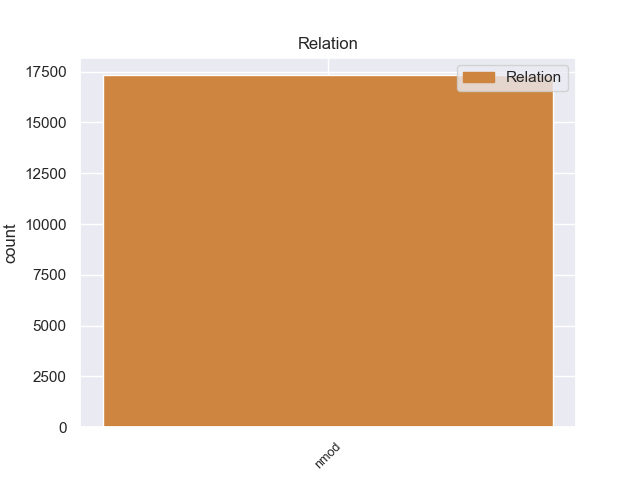
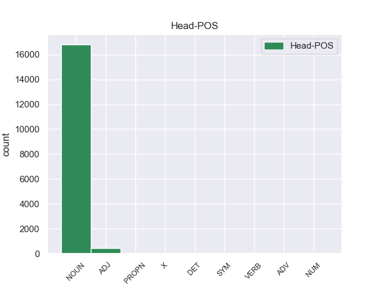
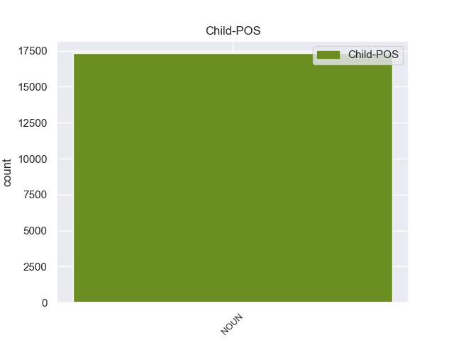

Distribution of features within this leaf



Agreement Rules sorted by frequency.
- When the dependent token is the nominal modifier(nmod) of the head token, and the head token is NOUN and the dependent token is NOUN.
1 En _ _ _ _ 0 _ _ _
2 1991 _ _ _ _ 0 _ _ _
3 , _ _ _ _ 0 _ _ _
4 como _ _ _ _ 0 _ _ _
5 ya _ _ _ _ 0 _ _ _
6 está _ _ _ _ 0 _ _ _
7 indicado _ _ _ _ 0 _ _ _
8 en _ _ _ _ 0 _ _ _
9 el _ _ _ _ 0 _ _ _
10 párrafo _ _ _ _ 0 _ _ _
11 anterior _ _ _ _ 0 _ _ _
12 , _ _ _ _ 0 _ _ _
13 se _ _ _ _ 0 _ _ _
14 creó _ _ _ _ 0 _ _ _
15 un _ _ _ _ 0 _ _ _
16 equipo equipo NOUN _ Gender=Masc|Number=Sing 0 _ _ _
17 ad _ _ _ _ 0 _ _ _
18 hoc hoc NOUN _ Gender=Masc|Number=Sing 16 nmod _ _
19 para _ _ _ _ 0 _ _ _
20 averiguar _ _ _ _ 0 _ _ _
21 como _ _ _ _ 0 _ _ _
22 se _ _ _ _ 0 _ _ _
23 podía _ _ _ _ 0 _ _ _
24 desarrollar _ _ _ _ 0 _ _ _
25 el _ _ _ _ 0 _ _ _
26 Dialogo _ _ _ _ 0 _ _ _
27 Social _ _ _ _ 0 _ _ _
28 , _ _ _ _ 0 _ _ _
29 este _ _ _ _ 0 _ _ _
30 equipo _ _ _ _ 0 _ _ _
31 estaba _ _ _ _ 0 _ _ _
32 formado _ _ _ _ 0 _ _ _
33 por _ _ _ _ 0 _ _ _
34 representantes _ _ _ _ 0 _ _ _
35 de _ _ _ _ 0 _ _ _
36 todas _ _ _ _ 0 _ _ _
37 las _ _ _ _ 0 _ _ _
38 organizaciones _ _ _ _ 0 _ _ _
39 relacionadas _ _ _ _ 0 _ _ _
40 con _ _ _ _ 0 _ _ _
41 CES _ _ _ _ 0 _ _ _
42 , _ _ _ _ 0 _ _ _
43 UNICE _ _ _ _ 0 _ _ _
44 y _ _ _ _ 0 _ _ _
45 CEEP _ _ _ _ 0 _ _ _
46 ; _ _ _ _ 0 _ _ _
1 Del _ _ _ _ 0 _ _ _
2 total total NOUN _ Gender=Masc|Number=Sing 10 nmod _ _
3 de _ _ _ _ 0 _ _ _
4 la _ _ _ _ 0 _ _ _
5 población _ _ _ _ 0 _ _ _
6 el _ _ _ _ 0 _ _ _
7 7.18 _ _ _ _ 0 _ _ _
8 % _ _ _ _ 0 _ _ _
9 eran _ _ _ _ 0 _ _ _
10 hispanos hispano ADJ _ Gender=Masc|Number=Plur 0 _ _ _
11 o _ _ _ _ 0 _ _ _
12 latinos _ _ _ _ 0 _ _ _
13 de _ _ _ _ 0 _ _ _
14 cualquier _ _ _ _ 0 _ _ _
15 raza _ _ _ _ 0 _ _ _
16 . _ _ _ _ 0 _ _ _
1 En _ _ _ _ 0 _ _ _
2 diciembre _ _ _ _ 0 _ _ _
3 de _ _ _ _ 0 _ _ _
4 el _ _ _ _ 0 _ _ _
5 año _ _ _ _ 0 _ _ _
6 2000 _ _ _ _ 0 _ _ _
7 , _ _ _ _ 0 _ _ _
8 Ibero _ _ _ _ 0 _ _ _
9 American _ _ _ _ 0 _ _ _
10 Radio _ _ _ _ 0 _ _ _
11 Chile _ _ _ _ 0 _ _ _
12 , _ _ _ _ 0 _ _ _
13 perteneciente perteneciente VERB _ Gender=Masc|Number=Sing|VerbForm=Part 0 _ _ _
14 a _ _ _ _ 0 _ _ _
15 el _ _ _ _ 0 _ _ _
16 grupo grupo NOUN _ Gender=Masc|Number=Sing 13 nmod _ _
17 Claxson _ _ _ _ 0 _ _ _
18 , _ _ _ _ 0 _ _ _
19 adquirió _ _ _ _ 0 _ _ _
20 el _ _ _ _ 0 _ _ _
21 88.5 _ _ _ _ 0 _ _ _
22 MHz _ _ _ _ 0 _ _ _
23 de _ _ _ _ 0 _ _ _
24 Santiago _ _ _ _ 0 _ _ _
25 ( _ _ _ _ 0 _ _ _
26 donde _ _ _ _ 0 _ _ _
27 hasta _ _ _ _ 0 _ _ _
28 ese _ _ _ _ 0 _ _ _
29 momento _ _ _ _ 0 _ _ _
30 operaba _ _ _ _ 0 _ _ _
31 Oxígeno _ _ _ _ 0 _ _ _
32 FM _ _ _ _ 0 _ _ _
33 ) _ _ _ _ 0 _ _ _
34 , _ _ _ _ 0 _ _ _
35 frecuencia _ _ _ _ 0 _ _ _
36 desde _ _ _ _ 0 _ _ _
37 donde _ _ _ _ 0 _ _ _
38 relanzaron _ _ _ _ 0 _ _ _
39 la _ _ _ _ 0 _ _ _
40 emisora _ _ _ _ 0 _ _ _
41 . _ _ _ _ 0 _ _ _
1 El _ _ _ _ 0 _ _ _
2 Jardín jardín PROPN _ Gender=Masc|Number=Sing 0 _ _ _
3 Botánico _ _ _ _ 0 _ _ _
4 de _ _ _ _ 0 _ _ _
5 Naples _ _ _ _ 0 _ _ _
6 ( _ _ _ _ 0 _ _ _
7 en _ _ _ _ 0 _ _ _
8 inglés inglés NOUN _ Gender=Masc|Number=Sing 2 nmod _ _
9 : _ _ _ _ 0 _ _ _
10 Naples _ _ _ _ 0 _ _ _
11 Botanical _ _ _ _ 0 _ _ _
12 Garden _ _ _ _ 0 _ _ _
13 ) _ _ _ _ 0 _ _ _
14 es _ _ _ _ 0 _ _ _
15 un _ _ _ _ 0 _ _ _
16 jardín _ _ _ _ 0 _ _ _
17 botánico _ _ _ _ 0 _ _ _
18 de _ _ _ _ 0 _ _ _
19 160 _ _ _ _ 0 _ _ _
20 acres _ _ _ _ 0 _ _ _
21 ( _ _ _ _ 0 _ _ _
22 64.7 _ _ _ _ 0 _ _ _
23 hectáreas _ _ _ _ 0 _ _ _
24 ) _ _ _ _ 0 _ _ _
25 de _ _ _ _ 0 _ _ _
26 extensión _ _ _ _ 0 _ _ _
27 , _ _ _ _ 0 _ _ _
28 localizado _ _ _ _ 0 _ _ _
29 en _ _ _ _ 0 _ _ _
30 Naples _ _ _ _ 0 _ _ _
31 , _ _ _ _ 0 _ _ _
32 Florida _ _ _ _ 0 _ _ _
33 , _ _ _ _ 0 _ _ _
34 en _ _ _ _ 0 _ _ _
35 los _ _ _ _ 0 _ _ _
36 Estados _ _ _ _ 0 _ _ _
37 Unidos _ _ _ _ 0 _ _ _
38 . _ _ _ _ 0 _ _ _
1 Cuando _ _ _ _ 0 _ _ _
2 tras _ _ _ _ 0 _ _ _
3 su _ _ _ _ 0 _ _ _
4 muerte _ _ _ _ 0 _ _ _
5 , _ _ _ _ 0 _ _ _
6 los _ _ _ _ 0 _ _ _
7 estados _ _ _ _ 0 _ _ _
8 de _ _ _ _ 0 _ _ _
9 California _ _ _ _ 0 _ _ _
10 y _ _ _ _ 0 _ _ _
11 Texas _ _ _ _ 0 _ _ _
12 trataron _ _ _ _ 0 _ _ _
13 de _ _ _ _ 0 _ _ _
14 cobrar _ _ _ _ 0 _ _ _
15 los _ _ _ _ 0 _ _ _
16 impuestos _ _ _ _ 0 _ _ _
17 relativos _ _ _ _ 0 _ _ _
18 a _ _ _ _ 0 _ _ _
19 su _ _ _ _ 0 _ _ _
20 herencia _ _ _ _ 0 _ _ _
21 , _ _ _ _ 0 _ _ _
22 no _ _ _ _ 0 _ _ _
23 pudieron _ _ _ _ 0 _ _ _
24 probar _ _ _ _ 0 _ _ _
25 que _ _ _ _ 0 _ _ _
26 hubiera _ _ _ _ 0 _ _ _
27 sido _ _ _ _ 0 _ _ _
28 residente _ _ _ _ 0 _ _ _
29 legal _ _ _ _ 0 _ _ _
30 en _ _ _ _ 0 _ _ _
31 ninguno ninguno DET _ Gender=Masc|Number=Sing|PronType=Neg 0 _ _ _
32 de _ _ _ _ 0 _ _ _
33 los _ _ _ _ 0 _ _ _
34 dos _ _ _ _ 0 _ _ _
35 territorios territorio NOUN _ Gender=Masc|Number=Plur 31 nmod _ _
36 . _ _ _ _ 0 _ _ _
1 A _ _ _ _ 0 _ _ _
2 Piñera _ _ _ _ 0 _ _ _
3 le _ _ _ _ 0 _ _ _
4 ha _ _ _ _ 0 _ _ _
5 ido _ _ _ _ 0 _ _ _
6 bien _ _ _ _ 0 _ _ _
7 en _ _ _ _ 0 _ _ _
8 el _ _ _ _ 0 _ _ _
9 plano _ _ _ _ 0 _ _ _
10 económico _ _ _ _ 0 _ _ _
11 y _ _ _ _ 0 _ _ _
12 muy _ _ _ _ 0 _ _ _
13 mal mal ADV _ Gender=Masc|Number=Sing 0 _ _ _
14 en _ _ _ _ 0 _ _ _
15 el _ _ _ _ 0 _ _ _
16 plano plano NOUN _ Gender=Masc|Number=Sing 13 nmod _ _
17 político _ _ _ _ 0 _ _ _
18 . _ _ _ _ 0 _ _ _
1 El _ _ _ _ 0 _ _ _
2 7.0 _ _ _ _ 0 _ _ _
3 por _ _ _ _ 0 _ _ _
4 ciento _ _ _ _ 0 _ _ _
5 de _ _ _ _ 0 _ _ _
6 los _ _ _ _ 0 _ _ _
7 alumnos _ _ _ _ 0 _ _ _
8 indígenas _ _ _ _ 0 _ _ _
9 cursan _ _ _ _ 0 _ _ _
10 la _ _ _ _ 0 _ _ _
11 educación _ _ _ _ 0 _ _ _
12 inicial _ _ _ _ 0 _ _ _
13 , _ _ _ _ 0 _ _ _
14 el _ _ _ _ 0 _ _ _
15 8.0 _ _ _ _ 0 _ _ _
16 la _ _ _ _ 0 _ _ _
17 preescolar _ _ _ _ 0 _ _ _
18 , _ _ _ _ 0 _ _ _
19 el _ _ _ _ 0 _ _ _
20 64.4 _ _ _ _ 0 _ _ _
21 la _ _ _ _ 0 _ _ _
22 primaria _ _ _ _ 0 _ _ _
23 , _ _ _ _ 0 _ _ _
24 el _ _ _ _ 0 _ _ _
25 16.5 _ _ _ _ 0 _ _ _
26 la _ _ _ _ 0 _ _ _
27 secundaria _ _ _ _ 0 _ _ _
28 , _ _ _ _ 0 _ _ _
29 principalmente _ _ _ _ 0 _ _ _
30 en _ _ _ _ 0 _ _ _
31 la _ _ _ _ 0 _ _ _
32 modalidad _ _ _ _ 0 _ _ _
33 de _ _ _ _ 0 _ _ _
34 telesecundaria _ _ _ _ 0 _ _ _
35 , _ _ _ _ 0 _ _ _
36 el _ _ _ _ 0 _ _ _
37 4.0 _ _ _ _ 0 _ _ _
38 la _ _ _ _ 0 _ _ _
39 media _ _ _ _ 0 _ _ _
40 superior _ _ _ _ 0 _ _ _
41 y _ _ _ _ 0 _ _ _
42 menos _ _ _ _ 0 _ _ _
43 de _ _ _ _ 0 _ _ _
44 el _ _ _ _ 0 _ _ _
45 uno uno NUM _ Gender=Masc|Number=Sing|PronType=Ind 0 _ _ _
46 por _ _ _ _ 0 _ _ _
47 ciento ciento NOUN _ Gender=Masc|Number=Sing 45 nmod _ _
48 la _ _ _ _ 0 _ _ _
49 educación _ _ _ _ 0 _ _ _
50 superior _ _ _ _ 0 _ _ _
51 ; _ _ _ _ 0 _ _ _
1 El _ _ _ _ 0 _ _ _
2 problema _ _ _ _ 0 _ _ _
3 es _ _ _ _ 0 _ _ _
4 que _ _ _ _ 0 _ _ _
5 no _ _ _ _ 0 _ _ _
6 han _ _ _ _ 0 _ _ _
7 sido _ _ _ _ 0 _ _ _
8 capaces _ _ _ _ 0 _ _ _
9 de _ _ _ _ 0 _ _ _
10 resolver _ _ _ _ 0 _ _ _
11 , _ _ _ _ 0 _ _ _
12 como _ _ _ _ 0 _ _ _
13 lo _ _ _ _ 0 _ _ _
14 han _ _ _ _ 0 _ _ _
15 hecho _ _ _ _ 0 _ _ _
16 otros _ _ _ _ 0 _ _ _
17 hoteles _ _ _ _ 0 _ _ _
18 , _ _ _ _ 0 _ _ _
19 el _ _ _ _ 0 _ _ _
20 hecho _ _ _ _ 0 _ _ _
21 de _ _ _ _ 0 _ _ _
22 que _ _ _ _ 0 _ _ _
23 los _ _ _ _ 0 _ _ _
24 clientes _ _ _ _ 0 _ _ _
25 a _ _ _ _ 0 _ _ _
26 las _ _ _ _ 0 _ _ _
27 8:00 _ _ _ _ 0 _ _ _
28 h h X _ Gender=Fem|Number=Plur 0 _ _ _
29 de _ _ _ _ 0 _ _ _
30 la _ _ _ _ 0 _ _ _
31 mañana mañana NOUN _ Gender=Fem|Number=Sing 28 nmod _ _
32 empiecen _ _ _ _ 0 _ _ _
33 a _ _ _ _ 0 _ _ _
34 guardar _ _ _ _ 0 _ _ _
35 las _ _ _ _ 0 _ _ _
36 tumbonas _ _ _ _ 0 _ _ _
37 con _ _ _ _ 0 _ _ _
38 las _ _ _ _ 0 _ _ _
39 toallas _ _ _ _ 0 _ _ _
40 , _ _ _ _ 0 _ _ _
41 y _ _ _ _ 0 _ _ _
42 no _ _ _ _ 0 _ _ _
43 hay _ _ _ _ 0 _ _ _
44 donde _ _ _ _ 0 _ _ _
45 poner _ _ _ _ 0 _ _ _
46 se _ _ _ _ 0 _ _ _
47 , _ _ _ _ 0 _ _ _
48 permaneciendo _ _ _ _ 0 _ _ _
49 el _ _ _ _ 0 _ _ _
50 50 _ _ _ _ 0 _ _ _
51 % _ _ _ _ 0 _ _ _
52 vacías _ _ _ _ 0 _ _ _
53 todo _ _ _ _ 0 _ _ _
54 el _ _ _ _ 0 _ _ _
55 día _ _ _ _ 0 _ _ _
56 . _ _ _ _ 0 _ _ _
Disagree Examples:
1 Una _ _ _ _ 0 _ _ _
2 de _ _ _ _ 0 _ _ _
3 las _ _ _ _ 0 _ _ _
4 primeras _ _ _ _ 0 _ _ _
5 jugadas jugada NOUN _ Gender=Fem|Number=Plur 0 _ _ _
6 de _ _ _ _ 0 _ _ _
7 el _ _ _ _ 0 _ _ _
8 partido partido NOUN _ Gender=Masc|Number=Sing 5 nmod _ _
9 estuvo _ _ _ _ 0 _ _ _
10 en _ _ _ _ 0 _ _ _
11 los _ _ _ _ 0 _ _ _
12 pies _ _ _ _ 0 _ _ _
13 de _ _ _ _ 0 _ _ _
14 Aguero _ _ _ _ 0 _ _ _
15 a _ _ _ _ 0 _ _ _
16 los _ _ _ _ 0 _ _ _
17 18 _ _ _ _ 0 _ _ _
18 minutos _ _ _ _ 0 _ _ _
19 pero _ _ _ _ 0 _ _ _
20 finalmente _ _ _ _ 0 _ _ _
21 su _ _ _ _ 0 _ _ _
22 disparo _ _ _ _ 0 _ _ _
23 no _ _ _ _ 0 _ _ _
24 paso _ _ _ _ 0 _ _ _
25 a _ _ _ _ 0 _ _ _
26 mayores _ _ _ _ 0 _ _ _
27 . _ _ _ _ 0 _ _ _
1 A _ _ _ _ 0 _ _ _
2 la _ _ _ _ 0 _ _ _
3 entrada _ _ _ _ 0 _ _ _
4 se _ _ _ _ 0 _ _ _
5 encuentra _ _ _ _ 0 _ _ _
6 una _ _ _ _ 0 _ _ _
7 fuente fuente NOUN _ Gender=Fem|Number=Sing 0 _ _ _
8 de _ _ _ _ 0 _ _ _
9 el _ _ _ _ 0 _ _ _
10 siglo siglo NOUN _ Gender=Masc|Number=Sing 7 nmod _ _
11 XVIII _ _ _ _ 0 _ _ _
12 que _ _ _ _ 0 _ _ _
13 simboliza _ _ _ _ 0 _ _ _
14 a _ _ _ _ 0 _ _ _
15 el _ _ _ _ 0 _ _ _
16 río _ _ _ _ 0 _ _ _
17 Dora _ _ _ _ 0 _ _ _
18 Baltea _ _ _ _ 0 _ _ _
19 desembocando _ _ _ _ 0 _ _ _
20 en _ _ _ _ 0 _ _ _
21 el _ _ _ _ 0 _ _ _
22 Po _ _ _ _ 0 _ _ _
23 , _ _ _ _ 0 _ _ _
24 obra _ _ _ _ 0 _ _ _
25 de _ _ _ _ 0 _ _ _
26 Ignazio _ _ _ _ 0 _ _ _
27 y _ _ _ _ 0 _ _ _
28 Filippo _ _ _ _ 0 _ _ _
29 Collino _ _ _ _ 0 _ _ _
30 . _ _ _ _ 0 _ _ _
1 Después _ _ _ _ 0 _ _ _
2 de _ _ _ _ 0 _ _ _
3 una _ _ _ _ 0 _ _ _
4 semana _ _ _ _ 0 _ _ _
5 muy _ _ _ _ 0 _ _ _
6 agitada agitado ADJ _ Gender=Fem|Number=Sing|VerbForm=Part 0 _ _ _
7 - _ _ _ _ 0 _ _ _
8 y _ _ _ _ 0 _ _ _
9 hasta _ _ _ _ 0 _ _ _
10 traumática _ _ _ _ 0 _ _ _
11 - _ _ _ _ 0 _ _ _
12 para _ _ _ _ 0 _ _ _
13 el _ _ _ _ 0 _ _ _
14 oficialismo oficialismo NOUN _ Gender=Masc|Number=Sing 6 nmod _ _
15 porteño _ _ _ _ 0 _ _ _
16 , _ _ _ _ 0 _ _ _
17 Mauricio _ _ _ _ 0 _ _ _
18 Macri _ _ _ _ 0 _ _ _
19 se _ _ _ _ 0 _ _ _
20 presentará _ _ _ _ 0 _ _ _
21 hoy _ _ _ _ 0 _ _ _
22 a _ _ _ _ 0 _ _ _
23 las _ _ _ _ 0 _ _ _
24 14 _ _ _ _ 0 _ _ _
25 en _ _ _ _ 0 _ _ _
26 el _ _ _ _ 0 _ _ _
27 Club _ _ _ _ 0 _ _ _
28 17 _ _ _ _ 0 _ _ _
29 de _ _ _ _ 0 _ _ _
30 agosto _ _ _ _ 0 _ _ _
31 , _ _ _ _ 0 _ _ _
32 en _ _ _ _ 0 _ _ _
33 Villa _ _ _ _ 0 _ _ _
34 Pueyrredón _ _ _ _ 0 _ _ _
35 . _ _ _ _ 0 _ _ _
1 Lo _ _ _ _ 0 _ _ _
2 mejor _ _ _ _ 0 _ _ _
3 no _ _ _ _ 0 _ _ _
4 son _ _ _ _ 0 _ _ _
5 los _ _ _ _ 0 _ _ _
6 negocios _ _ _ _ 0 _ _ _
7 , _ _ _ _ 0 _ _ _
8 es _ _ _ _ 0 _ _ _
9 el _ _ _ _ 0 _ _ _
10 Centro _ _ _ _ 0 _ _ _
11 Cultural _ _ _ _ 0 _ _ _
12 Borges _ _ _ _ 0 _ _ _
13 y _ _ _ _ 0 _ _ _
14 los _ _ _ _ 0 _ _ _
15 frisos friso NOUN _ Gender=Masc|Number=Plur 0 _ _ _
16 de _ _ _ _ 0 _ _ _
17 los _ _ _ _ 0 _ _ _
18 grandes _ _ _ _ 0 _ _ _
19 pintores _ _ _ _ 0 _ _ _
20 argentinos _ _ _ _ 0 _ _ _
21 en _ _ _ _ 0 _ _ _
22 la _ _ _ _ 0 _ _ _
23 cúpula cúpula NOUN _ Gender=Fem|Number=Sing 15 nmod _ _
24 de _ _ _ _ 0 _ _ _
25 las _ _ _ _ 0 _ _ _
26 Galerias _ _ _ _ 0 _ _ _
27 . _ _ _ _ 0 _ _ _
1 Furioso _ _ _ _ 0 _ _ _
2 , _ _ _ _ 0 _ _ _
3 Marcus _ _ _ _ 0 _ _ _
4 envía _ _ _ _ 0 _ _ _
5 a _ _ _ _ 0 _ _ _
6 Spock _ _ _ _ 0 _ _ _
7 y _ _ _ _ 0 _ _ _
8 a _ _ _ _ 0 _ _ _
9 McCoy _ _ _ _ 0 _ _ _
10 a _ _ _ _ 0 _ _ _
11 la _ _ _ _ 0 _ _ _
12 arena _ _ _ _ 0 _ _ _
13 como _ _ _ _ 0 _ _ _
14 consecuencia consecuencia NOUN _ Gender=Fem|Number=Sing 0 _ _ _
15 de _ _ _ _ 0 _ _ _
16 el _ _ _ _ 0 _ _ _
17 desafío desafío NOUN _ Gender=Masc|Number=Sing 14 nmod _ _
18 de _ _ _ _ 0 _ _ _
19 Kirk _ _ _ _ 0 _ _ _
20 . _ _ _ _ 0 _ _ _